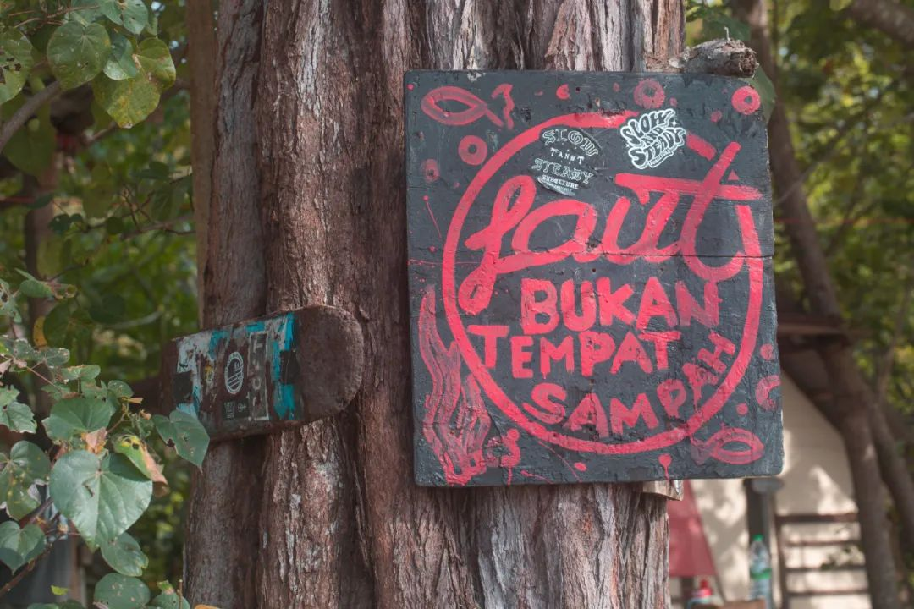

终于下定决心开始来写关于马来西亚的事了。从马来西亚返回学校到现在，也已经有一周了。之前好像从来没有拖更过这么久，即便是总结出去了二十多天的旅行，存了两三千张照片的日子里也没有拖延得像现在一样。从新加坡侧的兀兰通关。这次马来西亚柔佛Johor之行做了很多之前不曾做过的事。首图摄于新马口岸的通关巴士上。新加坡往马来西亚的方向上，我坐在和巴士相反的方向。本想观察下周围这个浅浅的河堤，却意外地因为反方向而看到了所有人期待着马来西亚的眼神。
第一次到马来西亚。过关之后立刻买了条绿箭口香糖。和国内的不一样，马来西亚的一条绿箭就像一颗颗的，而不是五片一条。我不是很满意这个打扮。
中环商场和坡没什么两样。依然是中午英文马来语混杂。只不过这边诸如安全出口之类的词都会写作马来语。好在这次下次来也学了AWAS和BAHAYA，别的倒是没多想。午餐过后，取到租的车。马来西亚和新加坡香港一样，都是右舵车。第一次开右舵车，连我一起五个人冲大马，大学生果真主打的就是一个信任(指车技)。地库里开了几圈，相信你现在已经对右舵驾驶有了基本的熟悉。现在请你上高速。我们要去的地方，在柔佛州的最东边。西马的南部高速路，除去标识上的马来文不看，基本都在凭形状猜意思。虽然路况比国内要差很多，但高速上跟车行驶，发现就算保持一样的速度也快一百五十码了。摊手很怀念这种感觉。自驾的时候，前方的景物快速向身后倒退。热带多有低云，低云亦即阵风蹿过林间的低语。这低语还带着点口气：迷迭香、曼陀罗。狭长的高速吊过，看起来像河湾流过的部分，也许就已经是海峡了。木丛很低，几乎看不到高的雨林，也看不到木顶有任何突破的建筑。小岭的起伏势总是差不多。如果没有导航和路上的其他车辆，我可能会怀疑自己是否在前进。笑着笑着，到了迪沙鲁Desaru。这是柔佛州东边海岸的一个小镇。预订的酒店在一个小别墅群里。换上衣服，我们就准备去冲浪了。
以前没有冲过浪。二位医生之前在海南冲过，而我们三都没有过。虽然之前已经在网上看过些教学视频，但早有预感，实际冲起来肯定不一样，也的确有些挑战。提着八英尺的冲浪板下海，两米四三的长度，提下水都已经在累了。开放海域，意味着，这里不会有围栏。不带动力的桨板，当时脑补的都是草东「于是转身向大海走去」不同的是我不明白不明白怎么才能给ta划出来然后站上冲浪板。把冲浪板对着海岸，马来教练在身后帮我看浪来的方向。浪快来，教练就催促pedal 以致于现在谁跟我这个词我都觉得魔音贯耳。划出一个速度，感觉浪在身后推我，教练迅速喊up up up, 能不能站起来就看天意了。海水很咸。也很浑浊。尽管戴着有度数的泳镜下水，沉着的时候也还是看不清一臂远的五指。冲浪就像在和大海沟通。海浪跟你说什么，你有没有回应，你们聊的结果怎么样。聊的政治呢还是聊的感情，聊的工作呢还是聊的海底大菠萝。我借室友的GoPro掉进水里了。我寻思着，可能就再也找不着了吧。不曾想马来小哥说他脚碰到了，但突然又没了。往后师兄过来走了走，又碰到了。主教练一个猛子扎下水，捞起来了GoPro。一种失而复得的快乐，于是我把身上所有的明信片和书签都送给了几位带我们的教练。回岸上后，已经很累了。泳裤里很多沙滩上的泥。在一间几个板子和砖垒起来的小房间里简单冲了冲，回到住处。
朋友们在屋内洗漱整理，夕阳将落，天色渐变。我搬了把椅子到门口车边，和师兄一起把脚撂在车尾灯上，聊天，嗑瓜子。拿出了小音响，放腰乐队的歌。隔壁夫妇带着三个小孩，用马来语跟我们打招呼。我说我们只会说英语。他们问我们从哪来。
好惬意。我已经不知道多久没有这样大运动过后，能聊天嗑瓜子放松了。我说这就是我觉得很平适安静的生活。师兄笑怎么不多闯闯，年纪轻轻就养老，约莫是觉得我不够有志气。我回说，我喜欢自然开心点的生活，并不一定代表就能过上上这样的生活咯。知行不一、愿望落空，这都是常有的事。朋友们也都去试了试右舵车。我们继续磕着瓜子。看隔壁的马来人一家的小孩跑来跑去。等天边的夕阳慢慢褪落。去镇上找了一家海鲜餐厅吃饭。没想到，竟然是一家摇滚餐厅。从后摇，到乡村摇滚。便宜和口味都很妙。
乐手和老板和食客们似乎都很熟。弹两首歌，下来嗦根华子。专注听歌的马来大爷把位置往前挪了挪。路对面停车区临时搭的餐桌上，做摇滚，从娃娃抓起。去商场买了一件泳衣。带的冲锋衣并不适合冲浪，海水一下就会灌进来阻碍着我的动作。下午赤膊冲着，回房之后洗澡，还觉得肚皮上在冲浪板蹭得或者晒得疼。第二天一早，室友的闹钟叫醒了我，我叫醒了室友。因为他们要去看日出。我接着睡。回笼觉最容易做梦了。梦到了六七年前的事。在我写这篇推文的时候，刚给人复述完这个梦。早上醒来之后，开始听MacRae: Mirror Lake 在C医生和L医生的帮助下，第一次戴上隐形眼镜。人生经历再度增加。

海边的小车上下来几个人，从林子里捡了些树枝，打了个围，点上了火。我分辨不出来树的种类，但植物松脂燃烧的味道可是不错。他们好像在烧烤什么？我犹豫了一下要不要凑过去看看。冲浪教练的女伴在小亭廊牵上了一个吊床，松垮垮地躺上去玩手机。沙滩上还有小螃蟹。打着洞在地上，需要很认真地辨别比指甲盖还浅的颜色。
我们商量的是，三个人先去冲、两个人帮我们拍；然后两个人去冲，剩下的人帮忙拍。冲完一小时的教练课之后，我在海上坐了一会儿。老手们也已经坐着望向海天相接的尽头，凭经验或者妄想来揣度下一个浪来的时间。那种坐和岸上的坐还不一样。老手们会上身直立，骑跨在冲浪板上，板尾深埋在水中，而板尖高高翘起。我也划到了那里，但是侧趴着。因为躺不稳，又想最大地在海上放松自己。午餐在小镇上。看不懂马来文就得一边查一边英语问。马来摊主告诉我说这个是梅子水，我一想酸柑酸梅那不挺好。结果是辣的。
马来餐店的辣椒挑得很好。一致夸，夸到我先辣椒扮了一碗饭为敬。湖南人，对辣椒的最大夸赞莫过于此。这个辣椒做出了酱辣椒和榨辣椒的混合口味来，入脑入心。没想好去干什么，觉得反正也累了，要不就去新山中环做个马杀鸡。泰国技师进来一句萨瓦迪卡，说得倒是好听，用泰式英语问有没有颈部受伤，然后用像嘎人的手法一样托着下巴给我左右各噶了两下。噶完还问问 see, no injury lah?大马感觉做什么都的确便宜很多。在KSL一栋楼里，从理发、美甲、按摩，甚至到看牙、吃饭、配眼镜，都全部包了。不少店里挂着接受新币支付的牌子，想来很多很多虾坡人就直接来了这边周末消费个一整天然后返回。
还车路上，找了个油站加油，95# 18L RM42，马来西亚令吉对人民币是1:1.5，放在国内这个油价都巨友好了。为了找路，在新山转了转。建筑不高的街道穿过着各式汽车摩托车，霓虹招牌立在铁甲上，照出一个亮堂的院内和婆娑不齐的路面。我想，上一次看到这样的地方，应该是在北海侨港和涠洲岛。202km，告别马来西亚的周末自驾，返回新加坡的学校里。

返校一周。非常忙，也很紧张。又不能是那种很焦虑的忙，只能是平静地对待所有事不然更容易出错，出错则更划不来。于是紧张被悬挂在后台，前台看到的都是来来去去的忙。又见面聊起旅行的感受。我说我本以为旅行完会是缓释和开心，这些感觉的确在旅行时和旅行完的那会儿有。但是一旦坐到实验室，科研的焦躁和厌学的情绪就变得更加强烈(并不是说旅行不好的意思，这是我自己的问题犹想休学的一年，在南航畅游中国的加持下，几乎是出去旅行一周、回长沙休息一周，做去下一个地方的民俗调研，然后又去了新的地方。久而久之，生活的极大新鲜来源，就变成了去一个新的地方旅行。依赖旅行来增添生活期待，这样的依赖很难摆脱。去年十一月底复学以来，我还没有出去过。这是四个月以来第一次出行。跟好朋友交流，我说博一都在封控中度过，后来我回国，别人都去过马来西亚印尼泰国文莱斯里兰卡新西兰土澳很多次了。周末马来西亚出行，没有刻意关心马来西亚民俗学的内容。我也没有拿出相机来拍除了冲浪以外的部分。在旅行中感觉到缓解，这也已经弥足珍贵了。